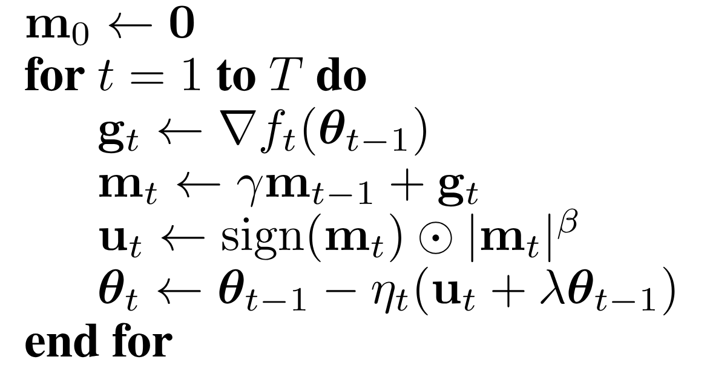

arXiv, 2026
We propose PowerStep, a memory-efficient optimizer that achieves coordinate-wise adaptivity without storing second-moment statistics. Across Transformer models from 124M to 235B parameters, PowerStep matches Adam's convergence speed while reducing optimizer memory by half—and by roughly 8× with int8 quantization.